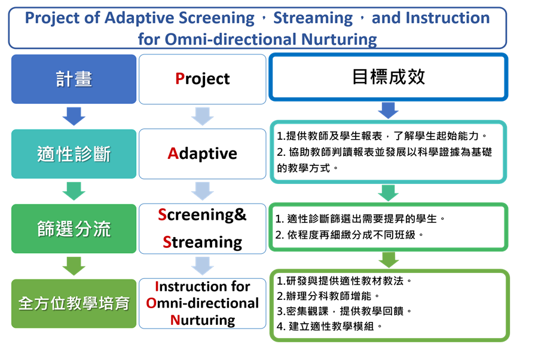

01
適性診斷
透過國文閱讀、英語與數學診斷工具，精確掌握學生能力層次與學習盲點。
從精準診斷、篩選分流，到全方位教學與師資培育， PASSION 以可實踐、可擴散的教育支持模式，陪伴學校與教師回應學生真正的學習需求。

PASSION 是 Project of Adaptive Screening, Streaming, and Instruction for Omni-directional Nurturing 的縮寫。 團隊以三個連續步驟，將診斷資料轉化為現場可用的教學行動。
透過國文閱讀、英語與數學診斷工具，精確掌握學生能力層次與學習盲點。
依據診斷結果安排更符合學生現況的分組與教學起點，降低學習內容與先備能力的落差。
結合教材、教法、教師增能與觀課回饋，讓教學支持不只停留在測驗結果。
保留原初模既有消息內容，先用更清楚的資訊層級呈現；後續再決定正式網站的消息管理方式。
提供更清晰的導覽與響應式設計。
邀請教師與學校共同參與教育扎根行動。
整合語文與數學教材供教師使用。